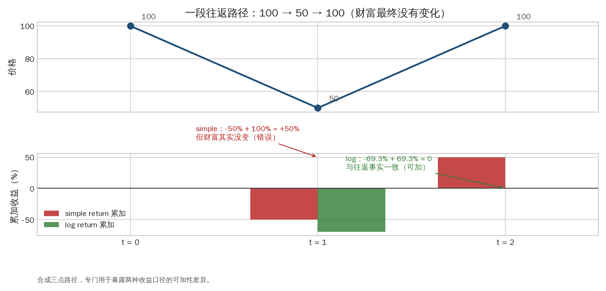
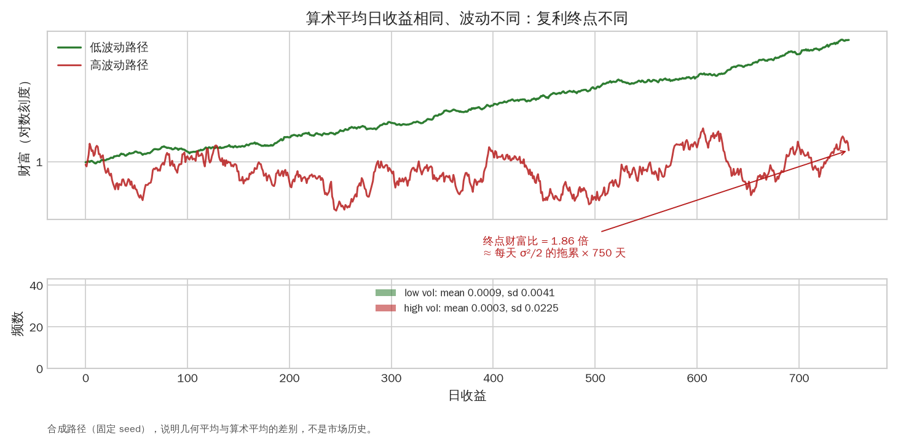
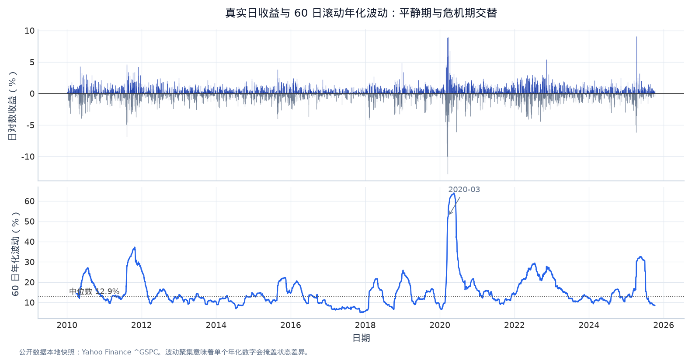
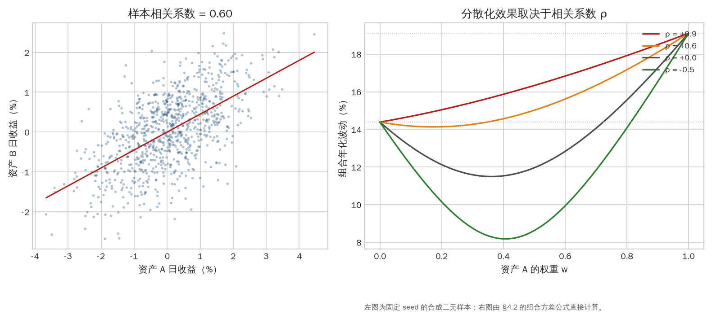
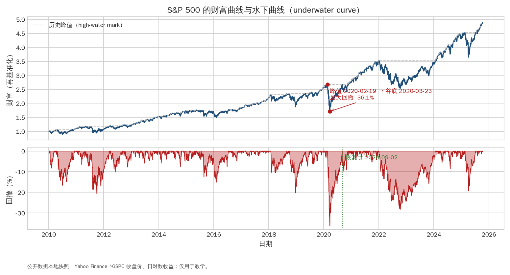
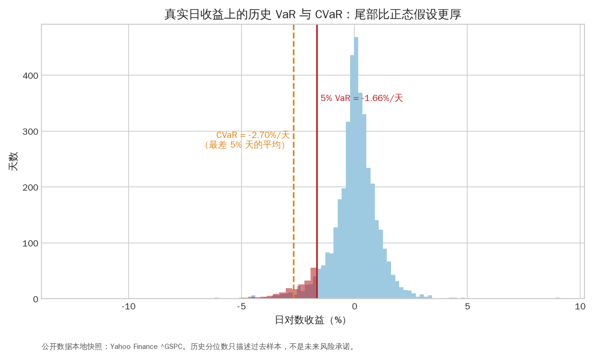

第二章：收益、风险、组合与绩效（Returns, Risk, Portfolio and Performance）¶
研究的基本对象不是“价格会不会涨”，而是给定持仓、时间和交易规则后，财富如何变化。本章把价格转成收益，再把收益转成可解释、可压力测试的绩效报告。
0. 学习目标¶
完成本章后，你应当能够：
- 计算 simple return、log return、total return 和 excess return；
- 从资产收益得到组合收益、暴露、换手、成本和净值曲线；
- 解释 volatility、correlation、beta、drawdown、Sharpe、Sortino、VaR、CVaR；
- 知道哪些年化公式依赖独立同分布假设，哪些指标会被自相关、尾部和调参扭曲；
- 设计一份包含 benchmark、成本压力测试、年度稳定性和风险暴露的研究报告。
1. 从价格到收益¶
1.1 Simple return（简单收益）¶
价格从 \(P_{t-1}\) 变到 \(P_t\)，简单收益为：
价格 100 变 110，收益为 10%；价格 110 变回 100，收益为 \(-9.09\%\)，不是 \(-10\%\)。因为收益作用于不同的本金，百分比变化不可简单相加。
如果资产支付现金股息 \(D_t\)，总收益（total return）应使用：
在实际数据里，常见选择是使用总回报指数或复权价格，但要确认复权因子是否包含现金股息、分拆和其他公司行动。
1.2 Log return（对数收益）¶
对数收益的优点是多期可以相加：
但投资者最终财富仍按简单收益复利。年化平均对数收益和年化简单收益不是同一个数量。日收益很小时二者接近，日波动大、杠杆高或持有期长时应明确使用哪一种。

图 2-1｜simple 与 log 的可加性差异。 价格走 100 → 50 → 100，财富最终没有变化。simple return 累加给出 +50%（-50% + 100%），与事实矛盾；log return 累加给出 0（-69.3% + 69.3%），与往返一致。多期建模用 log，向投资者报告用 simple，二者不能混写。数据类型：合成三点路径（专为暴露可加性差异而设）。
1.3 Excess return（超额收益）¶
相对无风险利率或 benchmark 的收益常写成：
Sharpe 研究通常使用 excess return；information ratio（信息比率）使用 active return。把二者混用会让风险调整后的结论失真。
2. 复利、财富曲线和路径¶
初始财富 \(W_0\)，每期净收益为 \(r_t\)，则：
假设策略 A 两天分别 +10%、-10%，策略 B 两天都是 0%，初始 100：
- A：\(100\times1.1\times0.9=99\)，平均算术收益为 0%，但最终亏 1%；
- B：最终仍为 100。
这说明 arithmetic mean（算术平均）不等于 geometric mean（几何平均）。波动本身会产生 volatility drag（波动拖累）。在固定平均收益下，路径越不稳定，复利结果可能越差。

图 2-2｜波动拖累：均值相同，终点不同。 两条合成路径的算术平均日收益相同，但高波动路径的终点财富明显更低，比值约等于每天 σ²/2 的拖累累积。下半部分的收益直方图显示二者均值几乎一样：只看“平均收益”会完全漏掉这个差异。数据类型：确定性合成路径（固定 seed），用于说明几何平均与算术平均的差别。
若一年有 \(N\) 个交易期，观察 \(T\) 期后的年化收益是：
它只是把过去区间换算到一年，不是对未来的预测。若样本包含非独立收益、不同交易时长或策略中途改变，年化需要谨慎解释。
3. 样本统计量与不确定性¶
3.1 均值、方差和标准差¶
对收益样本 \(r_1,\ldots,r_n\)，样本均值为：
样本方差和标准差为：
分母使用 \(n-1\) 是对总体方差的无偏估计。金融收益常有偏度（skewness）、峰度（kurtosis）、波动聚集（volatility clustering）和跳跃；均值和标准差无法描述全部分布。
3.2 年化波动的条件¶
如果每期收益近似独立、方差稳定，年化波动常用：
平方根时间法依赖独立同分布或至少弱相关假设。若收益存在正自相关，实际长期波动可能大于该估计；若策略收益平滑、由估值或非同步价格产生，Sharpe 也可能被虚高。研究报告要注明频率和估计窗口。

图 2-3｜波动是聚集的。 上半部分是真实日收益的正负茎线，下半部分是 60 日滚动年化波动：2011、2018、2020、2022 等危机期波动成簇出现，平静期可以长期低于中位数。因此“一个年化波动数字”只是窗口平均，报告必须写明估计窗口和频率。数据类型：公开数据本地快照（Yahoo Finance ^GSPC，2010 年起）；仅用于教学。
4. 相关性、协方差与组合风险¶
4.1 Covariance 和 correlation¶
两个收益序列 \(X,Y\) 的样本协方差为：
相关系数为：
相关性只描述线性共同变化，不是因果关系，也不是固定常数。危机期间，许多资产的相关性会同时上升，分散化效果变弱。
4.2 组合收益与协方差矩阵¶
若在 \(t-1\) 时点决定权重 \(w_{i,t-1}\)，下一期资产收益为 \(r_{i,t}\)，组合收益是：
收益协方差矩阵为 \(\Sigma\)，组合方差为：
交叉项 \(2w_iw_j\operatorname{Cov}(i,j)\) 解释了为什么组合风险不等于各资产波动简单相加。协方差估计不稳定时，优化器会把估计噪声放大，因此实务常用 shrinkage（收缩估计）、因子模型或风险上限。

图 2-4｜相关性如何决定分散化。 左图是相关系数约 0.6 的两资产日收益散点；右图用 §4.2 的组合方差公式画出 ρ = +0.9、+0.6、0、-0.5 四种情况下组合年化波动随权重的变化。ρ 越低，曲线越向下凹，分散化越有效；ρ 接近 1 时组合波动只是两资产波动的加权平均。数据类型：左图为固定 seed 的合成二元样本，右图为公式直接计算。
4.3 Beta 与因子暴露¶
对 benchmark 或因子 \(f_t\)，资产 beta 定义为：
简化的市场模型：
这里的 \(\alpha\) 是在模型和样本期间内无法由因子解释的平均部分；它不是自动等于可交易的“真实 alpha”。如果一个策略赚到的收益完全来自股票市场 beta，换了 benchmark 后 alpha 可能消失。
5. 暴露、杠杆和换手¶
5.1 Gross、net 和 notional exposure¶
多空策略常同时报告：
- gross exposure（总暴露）：\(\sum_i|w_i|\)，表示多空名义规模；
- net exposure（净暴露）：\(\sum_iw_i\)，表示方向性净仓位；
- leverage（杠杆）：名义暴露相对资本的比例；
- factor exposure（因子暴露）：对市场、行业、利率、汇率、价值、动量等因子的敏感度。
一个 net 为 0 的多空组合仍可能有 gross 2 倍或更高，面临融资、借券和流动性风险。
5.2 Turnover 和成本¶
权重从 \(w_{t-1}\) 变到 \(w_t\) 时，一种简单换手定义是：
若每单位换手成本为 \(c\)：
更真实的成本可以写成：
其中 \(f_i\) 是固定费用，spread 项表示穿越买卖价差，impact 表示订单改变市场价格的成本。市场冲击通常随参与率、波动、成交量和订单大小非线性变化。
6. 回撤（Drawdown）与恢复¶
财富曲线历史最高值：
回撤：
最大回撤（maximum drawdown）是所有 \(D_t\) 的最小值。还应记录：
- drawdown duration：从高点跌下到重新创新高的时间；
- time to recovery：恢复到前高所需时间；
- worst day/month：最差单日或月份；
- loss streak：连续亏损期；
- drawdown by regime：在不同市场状态下的回撤。
两个策略可能有相同 Sharpe，但一个经历短促的 -20% 回撤，另一个经历多年的 -10% 平滑回撤，投资者的承受能力、保证金需求和实际风险完全不同。

图 2-5｜最大回撤与恢复时间。 上半部分是再基准化的财富曲线与历史峰值线，下半部分是水下曲线（drawdown）。2020-02-19 到 2020-03-23 的最大回撤约 -36.1%，约半年后恢复前高；2022 年的回撤更慢、更磨人。读图时同时记录深度、持续时间和恢复时间，三者缺一不可。数据类型：公开数据本地快照（Yahoo Finance ^GSPC）；仅用于教学。
7. Sharpe、Sortino 和 Information Ratio¶
7.1 Sharpe ratio¶
以每期无风险收益 \(r_{f,t}\) 为基准：
常见年化写法是日 Sharpe 乘 \(\sqrt{252}\)，但该换算假设收益可按平方根时间缩放。Sharpe 对所有波动一视同仁；策略为了获得少量稳定收益而承受偶发大亏损时，Sharpe 可能掩盖尾部风险。
7.2 Sortino 与 information ratio¶
Sortino 用 downside deviation（下行偏差）衡量低于目标收益的波动，更关注投资者不希望看到的方向。Information ratio 为：
它衡量相对 benchmark 的主动管理质量。若 benchmark 选择不恰当，IR 的解释也会失效。
8. VaR、CVaR 与压力测试¶
Value at Risk（VaR，风险价值） 是给定持有期和置信水平下的损失分位点。例如 1 日 95% VaR = 2% 意味着按模型估计，5% 的最差日损失会超过 2%，但它不告诉你超过后会损失多少。
Conditional VaR / Expected Shortfall（CVaR/ES） 关注超过 VaR 阈值后的平均损失，因此对尾部更敏感。计算时要明确历史窗口、是否按资产重估、是否包含成本和流动性冲击。

图 2-6｜VaR 与 CVaR 在分布上的位置。 直方图是真实日收益的样本分布，红色竖线是 5% 分位的 VaR，橙色虚线是更差 5% 天的平均损失 CVaR。VaR 回答“坏日子从多坏开始”，CVaR 回答“坏日子平均多坏”；尾部越厚，二者差距越大。数据类型：公开数据本地快照（Yahoo Finance ^GSPC，2010 年起）；历史分位数不是未来风险承诺。
压力测试不依赖单一概率模型，可以人为设定：股票 -10%、利率 +100 bps、美元跳升、spread 扩大三倍、成交量下降一半，然后重新估算 PnL、保证金和风险限额。它回答“如果一个有经济意义的坏情景发生，会怎样”。
9. Benchmark、归因和可解释性¶
一份研究报告至少要有一个合理 benchmark：
- 趋势策略可与 equal-weight 或 time-series momentum baseline 比较；
- 股票选股可与市场指数、行业中性组合比较；
- 市场做市策略可与不持仓、被动报价或 mid-price 变化比较；
- 文本信号可与简单词典、随机标签和滞后收益比较。
PnL attribution（损益归因） 要回答收益从哪里来：资产选择、方向暴露、因子暴露、交易成本、融资、展期、股息或现金利息。若策略收益无法解释，下一次市场状态变化时也无法知道该保留、缩小还是停止。
10. 统计显著不等于经济显著¶
一个策略平均每天多赚 0.5 bp，若换手带来的 spread 和冲击是 3 bp，统计显著也没有可交易意义。反过来，一个经济上有价值但样本少的策略，p-value 可能不漂亮。研究时同时报告：
- effect size：收益或 IC 的实际大小；
- confidence interval：估计不确定性；
- economic cost：实现该结果的费用、容量和风险；
- multiple testing：尝试了多少特征、窗口和资产；
- robustness：换时间、资产、参数、成本后的结果。
11. 一个小型计算例子¶
假设四天净收益为 \([1\%,2\%,-1\%,0\%]\)，初始财富 100：
财富曲线为 101、103.02、101.9898、101.9898。历史高点依次为 101、103.02、103.02、103.02，第三天回撤约 \(-1.00\%\)，最大回撤约为该值。报告不能只写平均日收益 0.5%，因为路径和回撤告诉你持仓体验。
12. 常见误解¶
- “Sharpe 高就是好策略。” Sharpe 会被调参、平滑、低估成本和尾部风险扭曲。
- “收益率乘 252 就是年化收益。” 收益需要复利；只有均值或近似统计量才可能按特定假设缩放。
- “低相关等于低风险。” 相关性可能随市场状态变化，尾部同时下跌很常见。
- “回撤只是波动的另一种写法。” 回撤与路径最高点相关，是投资者真实经历的损失和恢复时间。
- “收益为正就是 alpha。” 收益可能来自 beta、杠杆、流动性或隐藏的尾部风险。
- “成本最后统一减 10 bps 就够了。” 成本随资产、时段、订单大小和流动性变化，至少应做多组压力测试。
13. 手工练习¶
练习 A：复利¶
策略一两天收益 +10%、-10%，策略二每天 0%。计算最终财富、算术平均和几何平均，写出为什么平均收益不足以描述投资结果。
练习 B：组合风险¶
资产 A 波动 20%，资产 B 波动 10%，权重各 50%。
- 若相关性为 1，组合波动是多少？
- 若相关性为 0，组合波动是多少？
- 若相关性为 -1，理论上能否完全对冲？
用 \(\sigma_p^2=w^T\Sigma w\) 逐项计算，不要只背结论。
练习 C：成本敏感性¶
某策略年化 gross return 18%，年化波动 12%，年换手 8 倍。若每次换手成本分别为 5、25、50 bps，计算近似净收益，并讨论在什么成本下策略失去吸引力。
条件风险与年化的边界¶
条件方差分解（Law of Total Variance）¶
市场波动常随状态改变。令 S 是状态（例如高/低波动），则
第一项是状态内部的噪声，第二项是不同状态均值变化造成的风险。若只报告全样本标准差，就无法知道风险是一直存在还是集中在危机阶段。项目中至少按年份、波动分位数或趋势状态分组报告 mean/std/drawdown。
波动缩放的假设与失败¶
常用年化近似 daily_std × √252 假定收益近似不相关且交易日定义稳定。自相关、重叠收益、期货非交易日、波动聚集和跳跃都会破坏它。收益均值不能简单地乘 252 当作复利收益；若要从日均值估计年化财富，应使用 (1+\bar r)^{252}-1 的近似并报告几何路径。面试时说明这是一个 convention/approximation，而非自然常数。
风险报告最低模板¶
每个策略、benchmark 和压力情景至少同时报告：gross/net return、年化波动、Sharpe/Sortino、最大回撤及恢复时间、平均/分位数换手、净/毛敞口、主要 beta、成本假设和样本区间。只有一个 Sharpe 数字无法区分高收益、高杠杆、平滑报价或幸存者偏差。
14. 本章小结¶
收益把价格变化转换成可比较的比例，财富曲线把收益放回复利和时间路径。风险不能由一个数字概括：波动描述一般变化，相关性描述共同变化，beta 描述因子敏感度，回撤描述路径损失，VaR/CVaR 描述尾部，成本和换手描述能否实现。
绩效表必须同时展示 gross/net、benchmark、暴露、换手、成本、回撤和时间稳定性。下一章的概率、统计与回归工具，目的就是量化这些不确定性，而不是让报告看起来更复杂。
15. 自测与面试表达¶
- 用一句话区分 simple return 和 log return，并说明各自适合什么计算。
- 为什么一个 net exposure 为 0 的多空组合仍可能有很大风险？
- 解释 Sharpe 的三个常见失真来源，并给出一个修复方法。
- 面试官问“为什么不直接最大化历史 Sharpe”，请用过拟合、成本和样本外验证回答。
- 如何向非金融同学解释最大回撤和回撤恢复时间？
Reference 与进阶了解¶
- Robert Carver, Systematic Trading（风险、仓位、组合与交易成本的实务框架）。
- Grinold & Kahn, Active Portfolio Management（alpha、风险模型和信息比率）。
- CFA Institute, Quantitative Methods 与 portfolio risk readings：https://www.cfainstitute.org/insights。
- QuantEcon, Statistics and Econometrics notebooks：https://quantecon.org/lectures/。
- AQR, Understanding Alternative Risk Premia 与风格溢价研究：https://www.aqr.com/Insights/Research。
- Man AHL, Research & Insights，关注 trend、risk management、portfolio construction：https://www.man.com/ahl。
- 进阶主题：Newey–West 标准误、block bootstrap、extreme value theory、expected shortfall、liquidity-adjusted VaR、capacity analysis。
可运行实验：真实 S&P 500 的收益、波动和回撤¶
本实验把价格变成 simple return、log return、滚动年化波动和 drawdown，再比较算术年化与复合年化。图上直接标出 2020 年波动区间，帮助理解“同一个平均收益”可能有完全不同的路径风险。
# Notebook setup: research/.venv + local public data
from pathlib import Path
import sys
import os
import numpy as np
import pandas as pd
import matplotlib.pyplot as plt
# Make the notebook runnable from research/lectures, research, or a parent workspace.
_here = Path.cwd().resolve()
_candidates = []
for _c in [_here, *_here.parents]:
_candidates += [_c, _c / "research", _c / "lectures", _c / "research" / "lectures"]
for _candidate in _candidates:
if (_candidate / "notebook_helpers.py").exists() and (_candidate.parent / "sources" / "external" / "data").exists():
LECTURE_DIR = _candidate
ROOT = _candidate.parent
break
else:
raise FileNotFoundError("请从 research、research/lectures 或包含 research 的工作区目录运行 notebook")
sys.path.insert(0, str(LECTURE_DIR))
from notebook_helpers import load_real_market_data, summary, annualized_sharpe, max_drawdown
FIG_DIR = LECTURE_DIR / "figures"
FIG_DIR.mkdir(parents=True, exist_ok=True)
plt.style.use("seaborn-v0_8-whitegrid")
plt.rcParams["figure.figsize"] = (11, 6)
plt.rcParams["figure.dpi"] = 110
print(f"ROOT={ROOT}")
print(f"Python={sys.executable}")
print("数据只从 sources/external/data 本地读取；要更新数据，请先保存新快照和来源说明。")
market = load_real_market_data(ROOT).loc["2010":"2025"].copy()
r = market["spx_log_return"].dropna()
rolling_vol = r.rolling(21).std() * np.sqrt(252)
wealth = (1 + market["spx_return"].fillna(0)).cumprod()
drawdown = wealth / wealth.cummax() - 1
fig, axes = plt.subplots(3, 1, sharex=True, figsize=(12, 10))
axes[0].plot(market.index, market["spx_close"], color="navy")
axes[0].set_ylabel("index level")
axes[1].plot(rolling_vol.index, rolling_vol, color="darkorange")
axes[1].axhline(rolling_vol.quantile(.9), color="firebrick", ls="--", lw=1, label="90th percentile")
axes[1].set_ylabel("21d ann. vol")
axes[1].legend()
axes[2].fill_between(drawdown.index, drawdown, 0, color="firebrick", alpha=.35)
axes[2].set_ylabel("drawdown")
axes[2].set_xlabel("date")
fig.suptitle("S&P 500: price, volatility and path loss")
fig.tight_layout()
fig.savefig(FIG_DIR / "02_returns_risk.png", bbox_inches="tight")
plt.show()
print(pd.Series(summary(r), name="S&P 500 log returns").round(4))
print("Arithmetic mean × 252:", round(float(r.mean() * 252), 4))
print("Geometric annualized wealth:", round(float((1 + market["spx_return"].dropna()).prod() ** (252 / len(r)) - 1), 4))
观察和面试提示¶
√252是在特定近似下的波动缩放，不是复利公式；把算术均值乘 252 和几何财富年化放在一起比较。- 最大回撤是路径统计量。请从图上找一个“波动下降但仍未创新高”的区间，并说明为什么只报 volatility 会漏掉它。